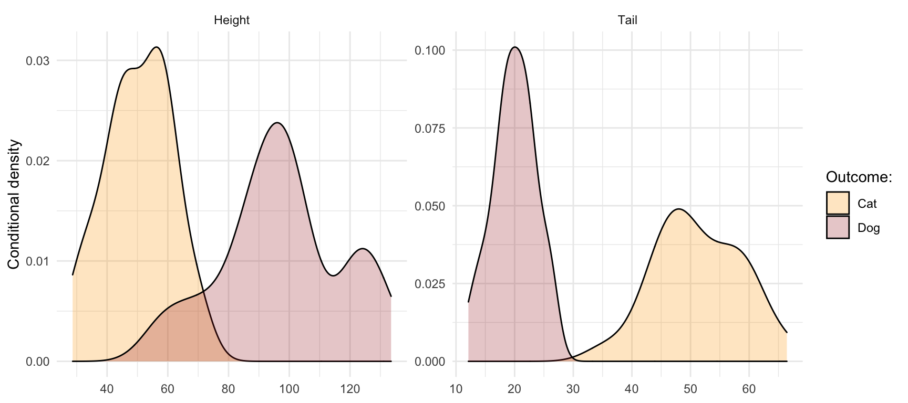

Bayesian Logistic Regression
2021-10-27
Ground truth
In this post we will work with a synthetic data set \(\mathcal{D}\) composed of \(N\) binary labels \(y_n\) and feature samples \(\mathbf{x}_n\). Working with synthetic data has the benefit that we have control over the ground truth that generates our data. In particular, we will assume that the binary labels \(y_n\) are generated by a logistic regression model
\[ \begin{equation} \begin{aligned} && p(y|\mathbf{x};\mathbf{w})&=\text{Ber}(y|\sigma(\mathbf{w}^T\mathbf{x})) \\ \end{aligned} (\#eq:logreg) \end{equation} \]
where \(\sigma(a)=1/(1+e^a)\) is the sigmoid or logit function (Murphy 2022). We let \(\mathbf{w}=\begin{bmatrix} 0 \\ 0.5 \\ -1 \\ \end{bmatrix}\) define the true coefficients.

Background
Using the synthetic data \(\mathcal{D}\) we will now estimate the logistic regression model @ref(eq:logreg) that generates them. Estimation essentially boils down to finding the vector of parameters \(\hat{\mathbf{w}}\) that maximizes the likelihood of observing \(\mathcal{D}\) under the assumed model. That estimate can then be used to compute predictions for some new unlabelled data set \(\mathcal{D}=\{x_m:m=1,...,M\}\). We are then typically interested in how accurate these model predictions are. This sums up how many automated decision-making systems operate in practice these days: for example, a company that is interested speeding up its recruitment process could train a binary classifier on historical data to automatically assign labels (\(\hat{y}_m \in \{\text{short-listed, rejected}\}\)) to new applications \(\mathbf{x}_m\). Does this seem like a sound approach to automated decision-making? Haven’t we forgot anything? While I have mentioned prediction accuracy above, there was no mentioning of assessing the classifier’s uncertainty around its predictions. The predicted labels \(y_m\) are merely point estimates based on the learned model parameters, which are random variables! Focusing merely on prediction accuracy and ignoring uncertainty altogether installs a false confidence in automated decision-making systems. Any trustworthy approach to learning from data should at the very least be transparent about its own uncertainty.
How then, can we estimate uncertainty aorund model parameters and predictions? Frequentist methods for uncertainty quantification generally involve either closed-form solutions based on asymptotic theory or bootstrapping (see for example here for the case of logistic regression). In Bayesian statistics and machine learning we instead use the posterior distribution over model parameters to quantify uncertainty. This approach to uncertainty quantification is known as Bayesian Inference because we treat model parameters in a Bayesian way: we make assumptions about their distribution based on prior knowledge or beliefs and update these beliefs in light of new evidence. The frequentist approach avoids the need for being explicit about prior beliefs, which in the past has sometimes been considered as unscientific. However, frequentist methods come with their own assumption and pitfalls (see for example (murphy2012machine?)) for a discussion). Without diving further into this argument, let us now see how Bayesian logistic regression can be implemented.
Unlike with linear regression there are no closed-form analytical solutions - not for our point estimate \(\hat{\mathbf{w}}\) and much less for its posterior distribution \(p(\mathbf{w}|\mathcal{D})\) (Murphy 2022). Fortunately though, there are many approximate solutions to this problem, some of which we will treat here.
Laplace Approximation
One of the simplest approaches called Laplace Approximation is straight-forward to implement and can be summarized as follows:
Step 1
Assume a Gaussian prior over model parameters, e.g. a spherical prior: let \(\mathbf{w}_0\) denote the vector of prior means and \(\Sigma=\mathbf{H}_0^{-1}=\sigma^2\mathbf{I}\) the prior covariance matrix. The \(\mathbf{H}_0^{-1}\) indicates that in case of a multi-variate Gaussian distribution the covariance matrix is equivalent to the inverse Hessian. Formally, we assume:
\[ \begin{equation} \begin{aligned} && p(\mathbf{w})&\sim \mathcal{N} (\mathbf{w_0},\mathbf{H}_0^{-1}) \\ \end{aligned} (\#eq:prior) \end{equation} \]
Step 2
Use an optimization algorithm to compute the maximum a posterior (MAP) estimate \(\hat{\mathbf{w}}\) as well as an estimate of the posterior uncertainty. The latter is our main quantity of interest after all and in the Gaussian setting corresponds to inverse Hessian of the posterior likelihood. Since maximising the likelihood (or equivalently minimizing the negative log likelihood) in this setting is a convex optimization problem (Murphy 2022) we have many efficient algorithms to choose from. Here we will implement one of the simplest: stochastic gradient descent (SGD). To avoid overfitting, we will also add a Ridge penalty that penalizes the \(\ell^2\)-norm of our estimated parameters, i.e. \(||\mathbf{w}||_2^2=\mathbf{w}^T\mathbf{w}\). Let \(\lambda\) denote a hyperparameter that governs how strictly we regularize and let \(\mu_n=\sigma(\mathbf{w}^T\mathbf{x}_n)\). Then all the important ingredients for our optimization problem can be summarized as follows:
\[ \begin{equation} \begin{aligned} && \mathcal{L}(\mathbf{w})&=- \frac{1}{N} \sum_{n=1}^{N} [y_n \log \mu_n + (1-y_n)\log (1-\mu_n)] + \lambda\mathbf{w}^T\mathbf{w} \\ && \nabla_{\mathbf{w}}\mathcal{L}(\mathbf{w})&= \frac{1}{N} \sum_{n=1}^{N} (\mu_n-y_n) \mathbf{x}_n + \mathbf{H}_0^T(\mathbf{w}-\mathbf{w}_0)+2\lambda \mathbf{w} \\ && \nabla^2_{\mathbf{w}}\mathcal{L}(\mathbf{w})&= \frac{1}{N} \sum_{n=1}^{N} \left[ \mu_n(1-\mu_n) \mathbf{x}_n \mathbf{x}_n^T \right] + \mathbf{H}_0+2\lambda \mathbf{I} \\ \end{aligned} (\#eq:likeli) \end{equation} \]
Step 3
With the posterior distribution over parameters \(p(\mathbf{w}|\mathcal{D})\) at hand we have the necessary ingredients to estimate the posterior predictive distribution \(p(y|\mathbf{x}, \mathcal{D})\). This estimated distribution can then be used to quantify the uncertainty around our predictions. …
Implementation in Julia (from scratch)
# Packages
using LinearAlgebra
# Helper functions:
∑(vector)=sum(vector)
# Sigmoid function:
function sigmoid(w,X)
if !isa(X, Matrix)
if length(size(X))>1
X = X'
end
end
return 1 ./ (1 .+ exp.(-X'w))
end
# Gradient:
function ∇(w,w_0,X,y,H_0,λ)
N = length(y)
μ = sigmoid(w,X)
Δw = w-w_0
g = 1/N * ∑((μ[n]-y[n]) * X[n,:] for n=1:N) .+ H_0'Δw .+ 2 * λ * w
# Normalalize gradient to length 1:
# g = g / sqrt(g'g)
return g
end
# Hessian:
function ∇∇(X,y,H_0,λ)
N = length(y)
μ = sigmoid(w,X)
Δw = w-w_0
return 1/N .* ∑(μ[n] * (1-μ[n]) * X[n,:] * X[n,:]' for n=1:N) + H_0 + UniformScaling(2 * λ)
end
# Stochastic Gradient Descent:
function sgd(X,y,∇,∇∇,w_0,H_0,ρ_0=1.0,T=1000,λ=1.0,ε=0.001)
# Initialization:
N = length(y)
w = w_0
ρ = ρ_0
# w_avg <- 1/n_iter * w # initialize average coefficients
t = 0 # iteration count
while t<T
n_t = rand(1:N)
ρ = ρ * exp(-ε*t) # exponential decay
w = w - ρ .* ∇(w,w_0,X[n_t,:]',y[n_t],H_0,λ)
t += 1
end
return w
endMCMC using rstan
References
For a great reference regarding the theory covered in this post see Murphy (2022) (chapters 4 and 10) and Bishop (2006) (chapter 8). The section on rstan draws heavily on a great blog post and also the Stan User’s Guide.